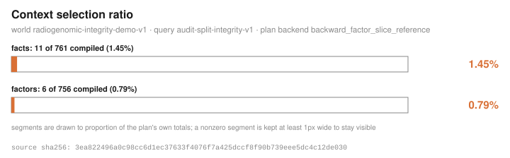
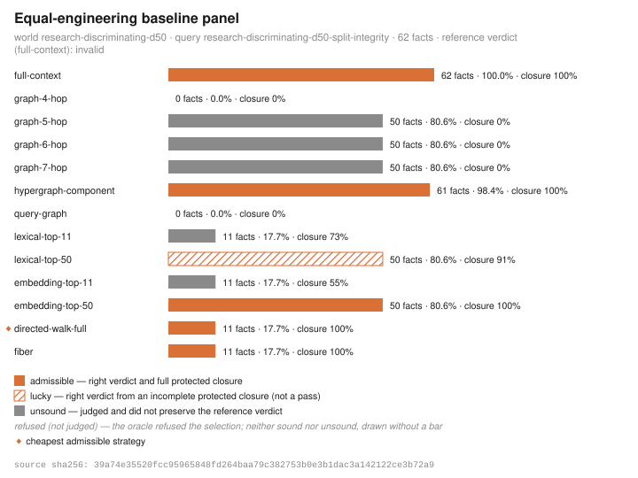
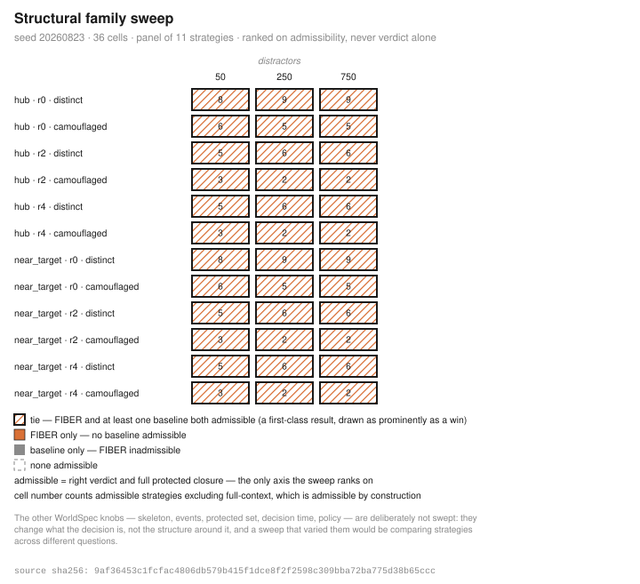
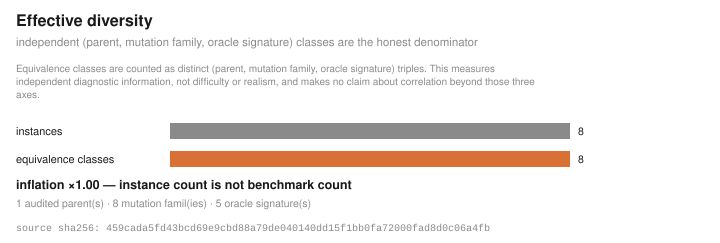

A research run you can recompute
bioprism research template | run | verify executes a fixed protocol
over synthetic decision worlds and writes a digest-sealed dossier, a rendered
report, and figures. Nothing about the run is a judgement call: the protocol is a pure function
of the request, every finding is derived by a fixed public rule, and every number cites the
sha256 of the artifact it came from.
The committed example's headline is a negative about this project's own
compiler. FIBER is tied by directed-walk-full at every declared
distractor level — both admissible at 11 facts, on worlds of 62, 262, and 762 facts — and is
not separated in 36 of 36 sweep cells. Of the run's nine findings, seven are
negative. That is the point of the runner, not an embarrassment: a runner that could not
report a tie against its own engine would not be measuring anything.
1. The protocol
plan_protocol is a pure function of the request document — no I/O, no clock, no
randomness — so the same request always plans the same protocol, and the dossier echoes the plan
next to the executed steps with nothing to reconcile. In order:
- Anchor. Step 0 is always the committed
fixtures/fiber-v0.1pair, embedded at build time: it is compiled and its certificate digest is required to equal the pinned cross-language parity valuec0da17ffc80465258345c8a538171bfd868100cd883e9a20780a0dc5477e7ea4— the digest CPython, the eager Rust path, and the indexed store agree on. A mismatch aborts the run: a dossier whose anchor is broken would be a lie from step 0. - Generate. Per declared distractor point, the preset world and query are
generated from one of four committed world-family presets (
reference_like,discriminating,external_confirmation,policy_restricted). Only the seed and the world id are overridden on the preset. - Compile and certify. The pair is compiled and the certificate is round-tripped through verification.
- Equal-engineering baseline panel. The full default panel — 13 strategies — is run over the same pair, ranked on admissibility rather than on getting the right answer.
- Structural sweep (optional). The committed structural grid, run at the grid's own seed because that grid is the benchmark.
- Metamorphic mutation (optional). The standard metamorphic suite over the base world — the first declared distractor point.
- Minimize (optional). The 1-minimal reduction of the base world, re-verified.
A step that cannot complete is a typed error that aborts the run: there is no “step skipped”
and no partial dossier. An invalid request exits 3 with the rule that refused it, not just the
field. research run --dry-run prints exactly this plan and dispatches nothing —
nothing runs and nothing is written.
2. The worked example
The repository commits a full run of one request — discriminating family,
distractor points 50 / 250 / 750, seed 20260823, sweep and mutation on. It executes
12 steps in about four seconds and produces 9 findings, of which 7 are
negative, plus 7 figures.
| Distractor point | World size | Cheapest admissible | Facts | % of world | FIBER separated? |
|---|---|---|---|---|---|
| d=50 | 62 | directed-walk-full | 11 | 17.74% | no — tie |
| d=250 | 262 | directed-walk-full | 11 | 4.20% | no — tie |
| d=750 | 762 | directed-walk-full | 11 | 1.44% | no — tie |
The sweep says the same thing at grid scale: fiber is not separated in 36 of 36 sweep cells — at least one baseline is admissible alongside it in every cell (full-context excluded, admissible by construction). The metamorphic step is the run's one clean positive: 8 accepted, 0 rejected, 0 duplicates, yield 100%, and 8 independent equivalence classes from 8 instances — inflation ×1.00, because instance count is not benchmark count.
The dossier's own digest is
46a740c5396151064a075ae213acf50b2508e26e2cd72ec429c0b87beac02802, over a request
whose digest is
336831b83c47f73fbf197b1b82d92afa8b2bebfd21f3fc05078d64e153b13e6e. Both are in the
committed REPORT.md
and dossier.json.
3. Figures from the committed run
These are the run's own SVGs, copied unmodified. Each one's footer carries the sha256 of the exact value rendered, so figure, caption, and dossier record can all be checked against each other.

reference-certificate, sha256
3ea822496a0c98cc6d1ec37633f4076f7a425dccf8f90b739eee5dc4c12de030 — the same
digest the figure's own footer carries.
directed-walk-full ties FIBER at 11 facts. Source artifact
comparison-d50, sha256
39a74e35520fcc95965848fd264baa79c382753b0e3b1dac3a142122ce3b72a9.
sweep-table, sha256
9af36453c1fcfac4806db579b415f1dce8f2f2598c309bba72ba775d38b65ccc.
mutation-diversity, sha256
459cada5fd43bcd69e9cbd88a79de040140dd15f1bb0fa72000fad8d0c06a4fb.4. How a finding is derived
A finding is never written by the runner in prose. Each one is produced by a fixed
public rule from a cited measurement — reference_anchor,
cheapest_admissible, fiber_tied_by_baseline, sweep_ties,
mutation_yield — and each carries:
- A level that cannot be inflated. Every finding is at level
observation. That is a single-variant enum: no stronger level is representable in the type system, so no run can emit one. - The digests it was derived from. Every finding cites the sha256 of each artifact supporting it, and every cited digest must resolve to an artifact the dossier itself carries — a finding whose support names nothing in the dossier fails verification.
- Negative status as data, not tone. A tie between the compiler and a
baseline is a required finding, flagged
negative: true, in the same shape as any positive result and rendered in the same table, same register — no appendix, no smaller type.
The dossier carries the request verbatim and its content digest, the planned protocol, one
record per executed step with input digests and every output artifact's name, sha256, and
canonical byte count, the findings, the seven required limitations verbatim, and
dossier_sha256 computed over the canonical document with the digest field removed.
Artifacts at or below 131072 canonical bytes are inlined whole; larger ones are digest-only and
never truncated, because a truncated JSON copy would be a malformed artifact pretending to be
real — and the worlds regenerate deterministically from the request anyway.
5. The verification contract
research verify --dossier <path> recomputes the digest and checks the
structural contract, printing a projection rather than a bare boolean: digest shape and match (a
malformed claimed digest is reported as digest_malformed, distinctly from
tampering), request digest match, required limitations present, step outcomes known, findings
present, finding levels valid, and finding support digests resolving to carried artifacts.
A one-byte tamper is caught. Exit 1 if the dossier does not verify; a document that is not a
research dossier at all — wrong shape, wrong schema — exits 3, because there is nothing to
verify.
Exit 0 reports a completed run whatever the findings say. A run whose every finding is negative exits 0, because a measured tie is a result, not a failure.
What verification proves, and what it does not. It proves the dossier is the unaltered output of a run and that its findings cite carried evidence. It does not prove the findings matter, that the question was answered, or that any measurement generalises beyond the synthetic worlds it ran on.
6. Reproducing it
The run is deterministic: the same request produces the same dossier, byte for byte, figures included. An independent re-run reproduced the committed example byte-identically across all nine files.
bioprism --json research template > request.json
(edit request.json to the committed example's document)
bioprism research run --request request.json --out-dir out --dry-run
bioprism research run --request request.json --out-dir out
bioprism research verify --dossier out/dossier.jsonThe request schema uses deny_unknown_fields: any unrecognised field is a parse
error, not an ignored knob. The question field is recorded verbatim
in the dossier and report and never interpreted — no code path anywhere branches
on its content. It exists so the dossier can state what was asked next to what was measured, and
the reader, not the runner, judges whether the measurements bear on it.
7. The methodology, as skills
The aurora-science plugin adds six methodology skills to the in-repo Claude Code
marketplace: equal-engineering-baselines,
discriminating-experiment-design, certificate-audited-analysis,
metamorphic-evaluation, honest-figures, and
research-dossier-discipline. They package the measurement discipline this runner
enforces for use in any evaluation or benchmarking effort.
8. Limitations
These seven travel with every dossier, verbatim, and verification fails if they are missing:
- autonomous measurement science over synthetic decision worlds: every measurement in this dossier is over committed fixtures and seeded generators
- no biology or medicine, no literature or prior-work coverage, no external-world observation, and no release-level claims from fixture evidence
- the question is recorded verbatim and never interpreted: the runner executes the protocol; it does not understand the question
- oracle review is a human gate: this runner accepts nothing, approves nothing, and releases nothing
- the sweep does not vary decision-defining knobs (skeleton, events, protected set, decision time, policy): they change what the decision is, not the structure around it, and a sweep that varied them would be comparing strategies across different questions
- negative findings are first-class results: ties and null separations are reported in the same register as positive findings, and the repository's own headline finding is a tie
- research and developer infrastructure: it does not diagnose an individual, recommend treatment, triage care, enroll participants, or claim medical-device functionality
Full reference: docs/RESEARCH.md. The wider measurement story is on the benchmarks page.